Every clip.
The same film.
Lika matches a set of AI-generated clips to each other, then finishes them for the cut. On your Mac.
Not on sale yet. €129 once, no subscription.
One cut, as it arrived and as Lika rendered it
Match
It measures every clip.
Then it moves them to one place.
Generated clips rarely agree. One sits on milky blacks, the next runs magenta, a third tops out early. Lika reads each clip's black level and its colour, where the highlights end, the tint of the midtones and the saturation, and gives every clip one correction that brings the set together.
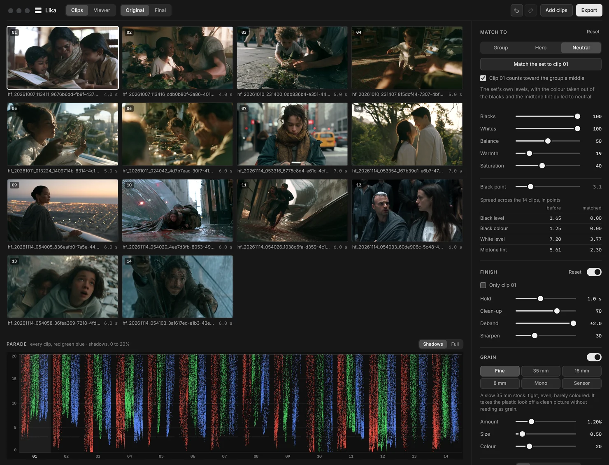
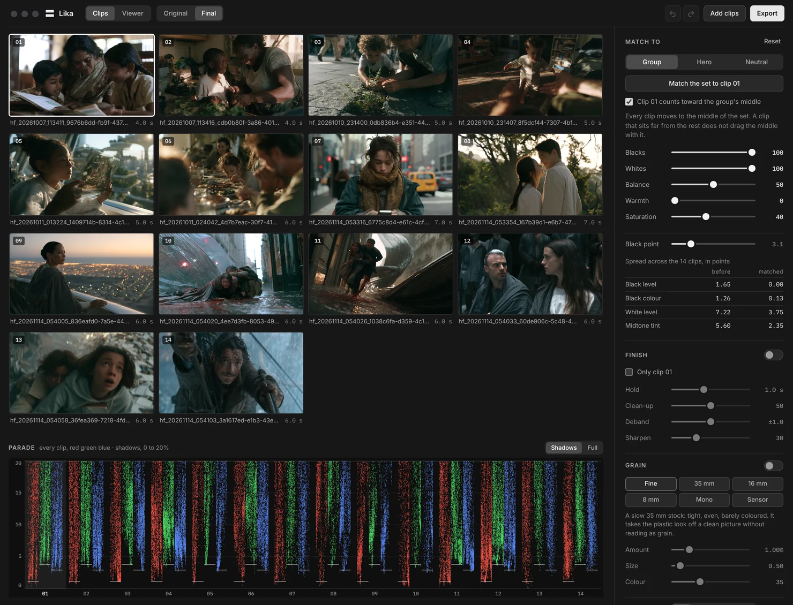
| Measure | Before | Matched |
|---|---|---|
| Black level | 1.65 | 0.00 |
| Black colour | 1.25 | 0.00 |
| White level | 7.20 | 3.77 |
| Midtone tint | 5.61 | 2.30 |
Group
Every clip moves to the middle of the set. A clip that sits far from the rest doesn't drag the middle with it.
Hero
Every clip moves to one clip you pick: the shot that already looks the way the film should.
Neutral
The set's own levels, with the colour taken out of the blacks and the midtone tint pulled to neutral.
- Five strengths
- Blacks, Whites, Balance, Warmth and Saturation, each from 0 to 100. Warmth starts at 0, because warmth is usually the scene and not the grade.
- Clip by clip
- Keep a clip out of the vote, give it less of the match, or trim its exposure, contrast, tint and black level by hand.
- Read off the neutrals
- The tint is measured on walls, ground and cloth, not on the red dress, so a colourful subject doesn't pull the balance.
- Plain numbers
- Every match is one ASC CDL: slope, offset, power and saturation. Copy it, or save the whole set.
Finish
Then it takes
the generated look off.
A level that breathes, bands in the sky, grit in the shadows, a surface that is too clean. Lika's finishing chain takes them in that order, in 32‑bit float on the graphics card, from the clip's own bits to the format you render.
- Hold
- Keeps level and colour steady. It takes out the pulse an encoder leaves every few frames, the small jump in brightness you see in hair or on a dark wall, and still follows real changes in the light.
- Clean-up
- Takes out noise and grit, measured against the clip's own noise. Frames are lined up on the motion and averaged where they agree, so lines, lashes and highlights stay as they are.
- Deband
- Rebuilds smooth ramps in skies and shadows, inside a hard limit on how far any pixel may move.
- Upscale
- 1.5×, 2× or UHD, with ringing held back. Chroma is rebuilt to full resolution first, with its edges taken from the luma.
- Sharpen
- Contrast-adaptive, after the upscale: it lifts edges and leaves flat areas alone.
- Grain
- Six kinds, made last and at the size you render, so nothing after it can soften it. Any clip can have a finish and a grain of its own.
 Fine
Fine 35 mm
35 mm 16 mm
16 mm 8 mm
8 mm Mono
Mono Sensor
Sensor
Cuts and timelines
A file with fourteen shots
is fourteen clips.
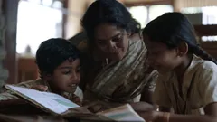
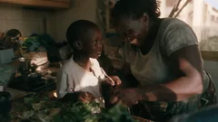
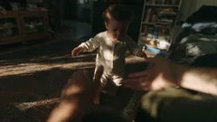
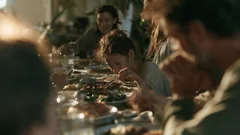
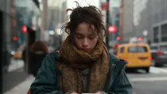
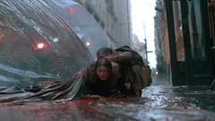
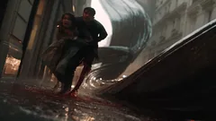
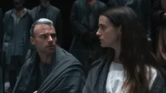
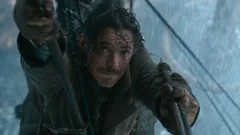
Find cuts splits a file into its shots, and each shot gets its own match. It is built to tell a cut from a flash, a whip pan or a fade. Render a file for each shot, or the whole clip back in one piece.
Or bring the sequence. XML from Premiere Pro or DaVinci Resolve, FCPXML from Final Cut Pro, an EDL or OTIO: Lika takes the stretches the timeline uses and leaves the rest of each file alone.
Out
Rendered for the edit.
Or not rendered at all.
Write new files in the format your edit wants, with the sound carried over. Or leave the files alone and take the match with you: a LUT and a CDL for every clip, for Resolve, Premiere Pro or Final Cut Pro.
- ProRes
- 422 Proxy, LT, 422 and HQ, 4444 and 4444 XQ
- DNxHR
- SQ, HQ, HQX and 444
- HEVC
- 10-bit, 4:2:0 or 4:2:2, in software or on the Mac's own chip
- H.264
- 8-bit, for review and delivery
- Lossless
- FFV1 at 10 or 16 bits, and uncompressed 10-bit
- CineForm
- 10-bit 4:2:2
- Image sequences
- DPX at 10 bits, TIFF and PNG at 16
- Looks
- A .cube LUT and a .cdl for every clip, with a .ccc collection
Price
Buy it once.
€129
One licence, no subscription. VAT included.
- Everything on this page
- For one person, on up to two Macs
- Every 1.x update included
- For any work, commercial work included
- 14 days to change your mind
Lika isn't on sale yet. The button opens your mail app, and I'll write to you the day it is.
For a Mac with Apple silicon, on macOS 13 or later.
Questions
Before you ask.
Do my clips leave my Mac?
No. Lika reads, matches and renders on your Mac. Nothing is uploaded, so there is no queue and nothing to wait for but your own machine.
Does it change my files?
No. Lika writes new files into a folder you choose and never touches the ones you gave it.
Is it only for AI-generated clips?
It is made for them, but it matches any Rec. 709 clips that should look like one film: stock footage, phone clips, renders.
What can I open in it?
MP4 and MOV files in H.264, HEVC, ProRes or DNxHR, at 8, 10 or 12 bits. Drop a folder and Lika takes every clip in it.
Can I keep grading in Resolve afterwards?
Yes, two ways. Render ProRes 4444 or a 16-bit sequence and grade on top of it. Or save the looks and put each clip's CDL or LUT on the original file, which keeps every bit of the source.
Can I try it first?
Yes. Download it and everything works for 7 days, exports included. After that Lika still matches and shows your clips, and exporting needs a licence. Add the key from your receipt in the same app; nothing to reinstall.
Which Macs does it run on?
Macs with Apple silicon, on macOS 13 or later.